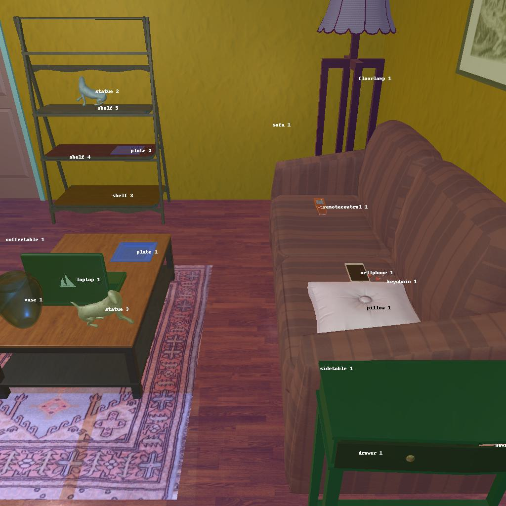

---------------------------------------------------------task: 3---------------------------------------------------------
--------------------------------------------------------------------------------------------------------------------------------------------------------------------
--------------------------------------------------------------------------------------------------------------------------------------------------------------------
Step:--------------------------------------------------------------------------6-------------------------------------------------------------------------------
----------------------------------------
VLM Prompt:
Image1:
Image2:
**Instruction**
1. Analyze the provided image to identify all visible household objects, focusing on those relevant to the task description "examine the plate with the floorlamp."
2. Use the analysis of the image and the task hint "The agent must find an object of the desired type, locate and turn on a light source with the desired object in-hand." to answer the question: what is the most reasonable action in the choices for the task description "examine the plate with the floorlamp"?
4. Decide and write the answer using the template: The answer is: (i): , where i is the real number. If there is no desired object in the image, search every place based on **Initial Observation** to find the object. And if no one is exactly correct, choose a similar answer.
**Initial Observation**
You are in the middle of a room. Looking quickly around you, you can see armchair (1), garbagecan (1), tvstand (1), shelf (1-5), sofa (1), coffeetable (1), sidetable (1-2), drawer (1)
**Answer Choices**
(1): go to armchair 1
(2): go to garbagecan 1
(3): go to tvstand 1
(4): go to shelf 1
(5): go to shelf 2
(6): go to sofa 1
(7): go to coffeetable 1
(8): go to sidetable 1
(9): go to sidetable 2
(10): go to shelf 4
(11): go to shelf 5
(12): open drawer 1
(13): close drawer 1
(14): examine drawer 1
**Answer**
Let's think step by step by following the instructions.
----------------------------------------
----------------------------------------
Original Response:
First, we need to identify the relevant objects for the task "examine the plate with the floorlamp." In the image, we can see that there is a floorlamp labeled as "floorlamp 1" next to the sofa. There are also several plates labeled as "plate 1" on the coffee table and "plate 2" on shelf 4.
Based on the task description, the agent must find a plate and then locate and turn on a light source (floorlamp) with the plate in hand. The most reasonable action would be to go to the location of a plate and then proceed to the floorlamp.
Looking at the answer choices, the agent should:
- Go to shelf 4 to get plate 2, as it is the only plate on a shelf (the other plate is on the coffee table, which is not a shelf).
- Then, the agent should go to the floorlamp to examine the plate with the light on.
The answer is: (10): go to shelf 4.
----------------------------------------
----------------------------------------
>>> Refine Original VLM Response and Get Pure Action: go to shelf 4
----------------------------------------
-----------------------------------------------------------------
Running time: 9.869781494140625 seconds
Total Money: 1.3289799999999998
-----------------------------------------------------------------
-----------------------------------------------------------------
Text Observation:You arrive at loc 11. On the shelf 4, you see a statue 2.
-----------------------------------------------------------------
UNSUCCEED